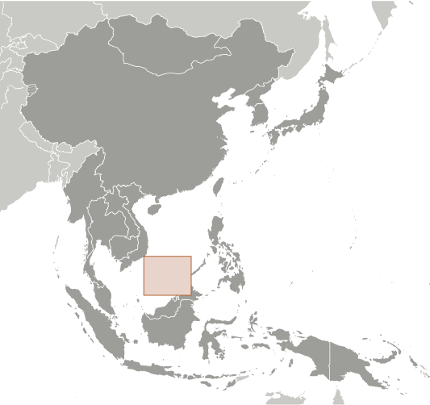
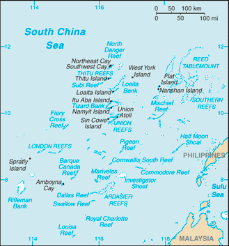
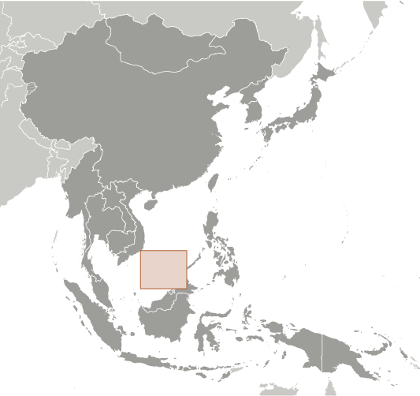
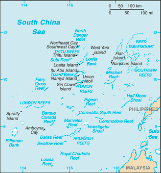

East & Southeast Asia :: SPRATLY ISLANDS
Introduction :: SPRATLY ISLANDS
-
The Spratly Islands consist of more than 100 small islands or reefs surrounded by rich fishing grounds - and potentially by gas and oil deposits. They are claimed in their entirety by China, Taiwan, and Vietnam, while portions are claimed by Malaysia and the Philippines. About 45 islands are occupied by relatively small numbers of military forces from China, Malaysia, the Philippines, Taiwan, and Vietnam. Since 1985 Brunei has claimed a continental shelf that overlaps a southern reef but has not made any formal claim to the reef. Brunei claims an exclusive economic zone over this area.
Geography :: SPRATLY ISLANDS
-
Southeastern Asia, group of reefs and islands in the South China Sea, about two-thirds of the way from southern Vietnam to the southern Philippines8 38 N, 111 55 ESoutheast Asiatotal: less than 5 sq kmland: less than 5 sq kmwater: 0 sq kmnote: includes 100 or so islets, coral reefs, and sea mounts scattered over an area of nearly 410,000 sq km (158,000 sq mi) of the central South China Seacountry comparison to the world: 250land area is about seven times the size of the National Mall in Washington, DC0 km926 kmNAtropicalsmall, flat islands, islets, cays, and reefsmean elevation: NAelevation extremes: lowest point: South China Sea 0 mhighest point: unnamed location on Southwest Cay 6 mfish, guano, undetermined oil and natural gas potentialagricultural land: 0%arable land 0%; permanent crops 0%; permanent pasture 0%forest: 0%other: 100% (2011 est.)typhoons; numerous reefs and shoals pose a serious maritime hazardChina's use of dredged sand and coral to build artificial islands harms reef systems; illegal fishing practices indiscriminately harvest endangered species, including sea turtles and giant clamsstrategically located near several primary shipping lanes in the central South China Sea; includes numerous small islands, atolls, shoals, and coral reefs
People and Society :: SPRATLY ISLANDS
-
no indigenous inhabitantsnote: there are scattered garrisons occupied by military personnel of several claimant states
Government :: SPRATLY ISLANDS
-
conventional long form: noneconventional short form: Spratly Islandsetymology: named after a British whaling captain Richard SPRATLY, who sighted Spratly Island in 1843; the name of the island eventually passed to the entire archipelago
Economy :: SPRATLY ISLANDS
-
Economic activity is limited to commercial fishing. The proximity to nearby oil- and gas-producing sedimentary basins indicate potential oil and gas deposits, but the region is largely unexplored. No reliable estimates of potential reserves are available. Commercial exploitation has yet to be developed.
Transportation :: SPRATLY ISLANDS
-
4 (2013)country comparison to the world: 189total: 3914 to 1,523 m: 2under 914 m: 1 (2013)total: 1914 to 1,523 m: 1 (2013)3 (2013)none; offshore anchorage only
Military and Security :: SPRATLY ISLANDS
-
Spratly Islands consist of more than 100 small islands or reefs of which about 45 are claimed and occupied by China, Malaysia, the Philippines, Taiwan, and Vietnam
Transnational Issues :: SPRATLY ISLANDS
-
all of the Spratly Islands are claimed by China (including Taiwan) and Vietnam; parts of them are claimed by Brunei, Malaysia and the Philippines; despite no public territorial claim to Louisa Reef, Brunei implicitly lays claim by including it within the natural prolongation of its continental shelf and basis for a seabed median with Vietnam; claimants in November 2002 signed the "Declaration on the Conduct of Parties in the South China Sea," which has eased tensions but falls short of a legally binding "code of conduct"; in March 2005, the national oil companies of China, the Philippines, and Vietnam signed a joint accord to conduct marine seismic activities in the Spratly Islands